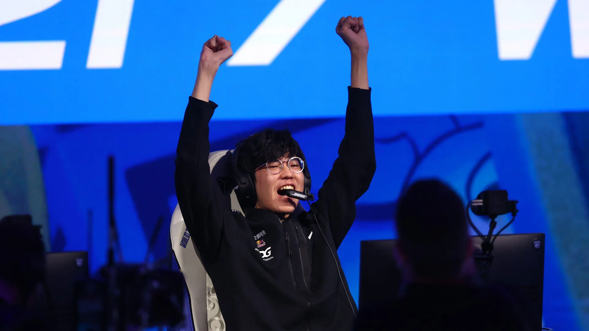
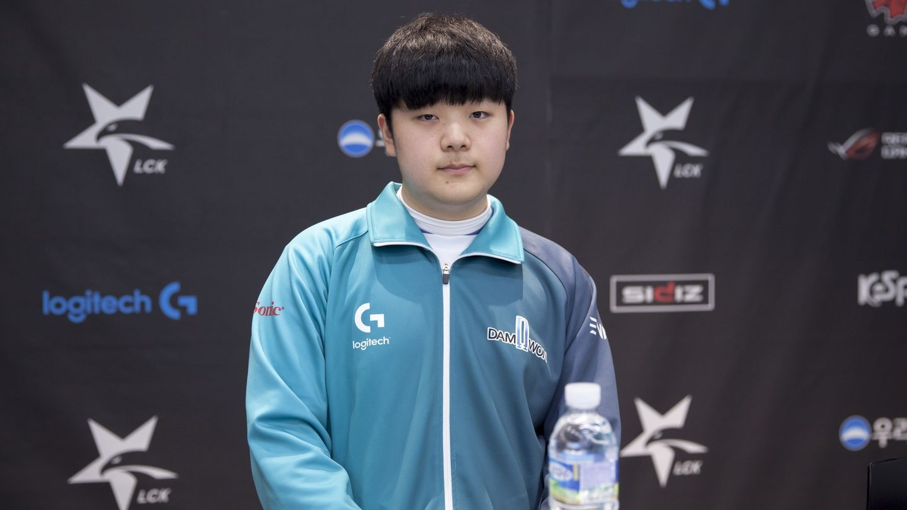
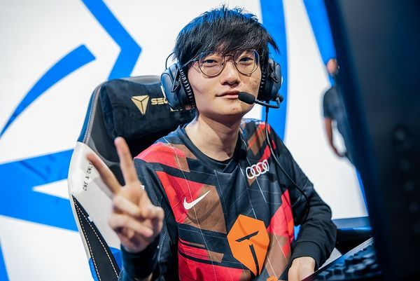
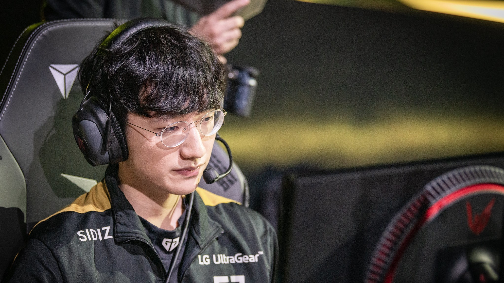
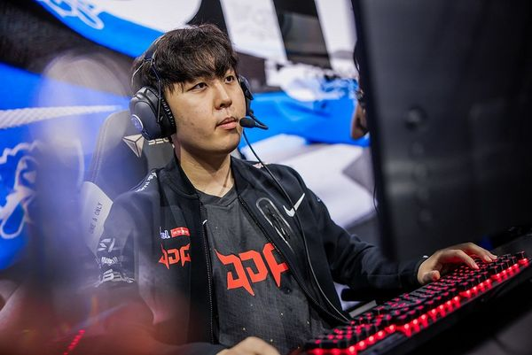

Ahora que tenemos las menciones de honor, discutimos los cinco mejores junglas en Worlds. Jiejie no tuvo una división regular estelar, pero se redimió una vez que llegaron los playoffs de la LPL.
Obtuvo el porcentaje más alto de KDA y KP tanto en los playoffs como en las finales regionales, lo que permitió a EDG obtener el último lugar en la fase de grupos del Mundial. Es más conservador que la mayoría de los jugadores de la LPL y, hasta cierto punto, el estilo de juego de EDG es el más cercano a los equipos coreanos.
Las principales fortalezas de Jiejie son su compostura y consistencia a lo largo de los juegos. Rara vez se ve atrapado en peleas y siempre está listo para apretar el gatillo cuando la situación lo requiere. Dicho esto, le falta o no ha demostrado el potencial de acarreo que tienen todos los otros junglas por encima de él, por lo que es el quinto en esta lista.

Podría sorprender a algunos ver a Canyon tan bien calificado después de la temporada decepcionante que ha tenido DWG KIA hasta ahora, pero déjenos explicarlo.
Primero, Canyon se ha visto retenido por todo su equipo este año. Aparte de su mid laner, los carriles superior e inferior no han estado al mismo nivel que los otros equipos principales de LCK. Para cualquier jungla, tener dos carriles laterales débiles es problemático. Jugar con cualquiera de ellos se vuelve difícil ya que tienes la garantía de que el otro se quedará atrás. Como resultado, DWG KIA siempre tendrá un carril perdedor, lo que finalmente pondrá al equipo en situaciones incómodas.
Canyon ha tratado de cubrir el problema, jugando con un estilo más orientado al carry y dispuesto a probar cualquier campeón que pueda garantizarles una ventaja en el draft. Jugó contra 15 campeones únicos en la división regular de verano, y durante las finales regionales, nunca jugó contra un campeón más de una vez. Tener este nivel de flexibilidad es raro y lo que hace que Canyon sea tan especial es que se desempeña a un alto nivel con todo. Es posible que ya no tenga un súper equipo a su alrededor, pero Canyon definitivamente sigue siendo uno de los mejores junglas del mundo.

Tian casi ha regresado a su mejor forma cuando se convirtió en el Campeón Mundial de 2019 y ganó el MVP de las Finales.
La carrera del jungla chino se hundió en 2020 debido a graves problemas de salud que afectaron su rendimiento. Además del estrés que había acumulado, Tian se tomó un descanso de la competencia en 2021 al comienzo de la temporada. Después de una temporada decepcionante con FunPlus Phoenix, Tian se unió a Top Esports y se ha convertido en un jugador clave en la lista.
A pesar de no tener las mejores estadísticas entre los junglas de la LPL (el quinto más alto en KDA de los Playoffs de verano, el séptimo en CS por minuto, solo por nombrar algunos), la fuerza de Tian se basa en su habilidad para crear jugadas en las peleas de equipo y la capacidad de realizar jugadas cruciales.
Ahora que tanto Hecarim como Lee Sin volverán al meta, creo que Tian brillará incluso más que en Summer, ya que le encanta jugar con estos dos campeones. A pesar de no haber ganado dos veces el título de la LPL, Top Esports ha demostrado durante todo el año que son lo suficientemente fuertes como para estar en lo más alto: cuidado con Tian y su escuadrón.

Al igual que Tian, Peanut tuvo que arrastrarse de regreso a la cima de los mejores junglas del mundo. Luego de su fallida etapa en China, Peanut demostró su valía en Nongshim RedForce, lo que convenció a Gen.G de elegirlo para la temporada 2022. No hace falta decir que probablemente fue la mejor elección posible para la organización.
Si bien la mayoría de la gente le da crédito a Ruler o Chovy por las excelentes actuaciones de acarreo en Summer, algunos créditos también deben ir a Peanut por lo bien que fue su juego en la jungla. Es inteligente con sus caminos y está dispuesto a renunciar a sus propios recursos para asegurarse de que Ruler o Chovy salgan adelante. También tiene un amplio grupo de campeones, ya que jugó con nueve junglas diferentes en el verano de la LCK, y sobresale particularmente jugando con los matones, que son los tipos de campeones más fuertes en el metajuego.
Con lo dominante que parecía Gen.G en la división de verano, Peanut realmente no tenía mucha competencia a nivel nacional, lo que puede generar algunas preguntas sobre él y el nivel general de juego de Gen.G. ¿Superarán a los equipos de la LPL y se convertirán en Campeones del Mundo? Tendremos que esperar hasta el 7 de octubre para averiguarlo.

Desde que se unió a JDG procedente de la LCK, Kanavi ha sido considerado uno de los mejores talentos importados de la LPL. Inmediatamente se hizo un nombre en 2020, ganó el LPL Spring Split y terminó segundo en el verano. Este año, sin embargo, Kanavi se superó a sí mismo, elevando su juego a picos más altos, con una consistencia aún mayor.
Lo que hace que Kanavi sea tan especial en comparación con todos los demás en esta lista de niveles es cómo puede asumir un papel de acarreo en un meta centrado en bots. Está dispuesto a tomar los recursos y usarlos para ser agresivo con el objetivo de extender aún más la ventaja de su equipo. En una temporada en la que los junglas suelen cubrir un papel de utilidad, su estilo de juego es difícil de lograr, ya que un error puede ser fatal para el resultado. Sin embargo, Kanavi siempre es una presencia constante en los juegos de JDG, ya que lideró las listas de daños entre todos los junglas en los playoffs.
